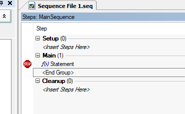

- Generated by
 1.16.1
1.16.1
|
TestStand Crash Course
|
Right-clicking on a test step and navigating to Run Mode reveals the available step run modes. These step modes often prove useful while debugging.
There are a few ways to run a TestStand sequence. To see these options, hover over Execute.
To run a subset of steps from a sequence, select the desired steps within the Steps Pane and right click, selecting Run Selected Steps. This can also be done from Execute > Run Selected Steps.
Debugging a TestStand sequence can be approached similar to conventional code debugging.
TestStand's sequence analyzer is a tool that will attempt to point out potential issues in a sequence. It can be run via Debug > Sequence Analyzer > Analyze "SequenceFileName.seq". Additionally, it can be automatically set to run before any execution, via Debug > Sequence Analyzer > Toggle Analyze File Before Executing.
Sequence analysis results will populate in the Analysis Results Pane, which is in the same location as the Step Settings Pane.
Breakpoints can be set by navigating to Debug > Breakpoints/Watches, and adding a breakpoint via the resulting menu. Note that watch expressions can also be set from within the menu.
Alternatively, clicking within the white space directly to the left of a test step will enable a breakpoint.

While executing a sequence with breakpoints, standard debugging step commands can be used. They can be found under Debug; here are some of the most useful ones: